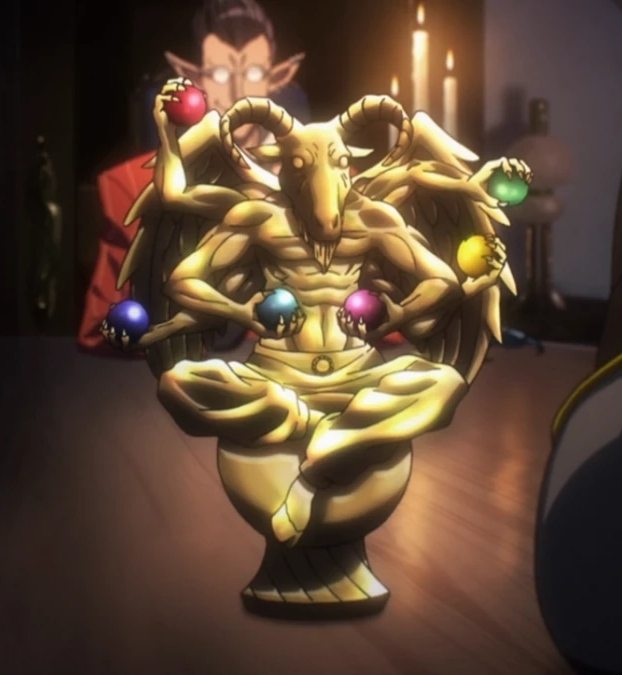

Description
In the past, back when Ainz Ooal Gown's power was at its peak, there was once talk of a World Item which could summon an unlimited number of demons that would eventually consume the entire world. Despite knowing of the dangerous power of the World Item,
Ulbert was intrigued and attempted to create an item to imitate it. However, Ulbert was unable to perfect the item as he was hoping it to be. Thus, Ulbert started losing interest in making any more of it and he eventually gave up. Before leaving the guild, he gave it to his creation Demiurge.
- Appearance
The item better known as Armageddon Evil bears resemblance to a small statue that looks to be a demon. In each of the demon's six arms grasped a different kind of jewel. And a strange, pulsing light radiated from within.
- Abilities
Ulbert's final attempt to replicate the World Item was deemed a failure as it could not cast six spells simultaneously. Despite being a failure, however, each of the gems attached to the statue contained the 10th tier spell ‘Armageddon Evil’
that could summon a demon army. During the duration of its spell casting, the summoning of various monsters follows a sequential pattern as each group of demons were summoned at different intervals respectively.
- The first to appear during the item's summoning were 128 Inferior Demons below level 10. Afterwards, the second to appear are 64 demons of around level 20 appeared which happens to be Hell Scythes.
Next were the appearance of 32 Rotting Demons of around level 30 that are the third to debut. Later, the fourth kind of demons appearing were around 8 Supplicants of around level 40. Following them were the appearance of 4 demons of around level 50 known as War Devils.
Lastly, the spell would come to an end by summoning the two level 60ish demons and one more demon of around level 70
|